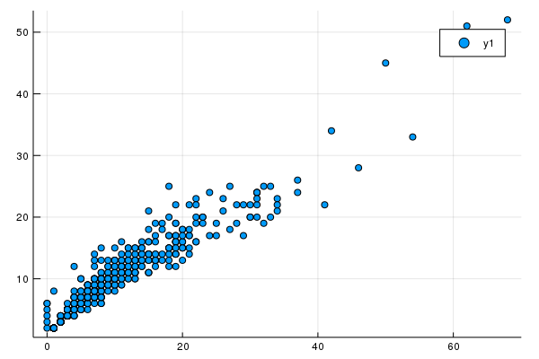

Counting objects and paging
using Mangal
using Plotscount(MangalNetwork)1386Havens_data = first(datasets("q" => "havens"))MangalDataset(15, true, "havens_1992", 1984-06-01T04:00:00, 2019-02-23T01:4
7:06, 2019-02-23T01:47:06, MangalReference(15, 1992, "10.1126/science.257.5
073.1107", missing, missing, "@article{Havens_1992, doi = {10.1126/science.
257.5073.1107}, url = {https://doi.org/10.1126%2Fscience.257.5073.1107}, ye
ar = 1992, month = {aug}, publisher = {American Association for the Advance
ment of Science ({AAAS})}, volume = {257}, number = {5073}, pages = {1107--
1109}, author = {K. Havens}, title = {Scale and Structure in Natural Food W
ebs}, journal = {Science}}", "https://doi.org/10.1126%2Fscience.257.5073.11
07", "URL of the attached data"), 3, "Pelagic communities of small lakes an
d ponds of the Adirondack")count(MangalNetwork, "dataset_id" => Havens_data.id)50Note that there is a shorthand notation for this:
Havens_count = count(MangalNetwork, Havens_data)50Havens_networks = networks(Havens_data)
page = 0
while length(Havens_networks) < Havens_count
global page = page + 1
append!(Havens_networks, networks(Havens_data, "page" => page))
endLS = [(count(MangalInteraction, n), count(MangalNode, n)) for n in Havens_networks]
scatter(LS)